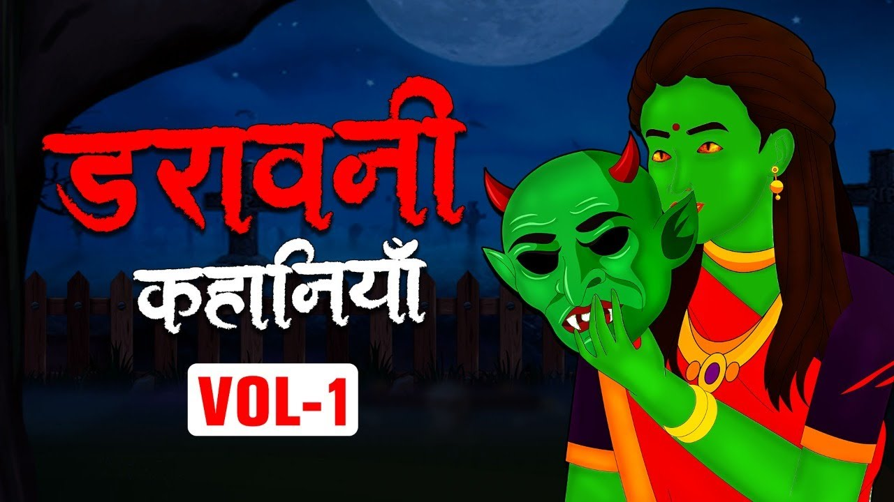

MAYANK RAJPOOT
HELLO EVERYONE I AM MAYANK

Maker
READ THIS FUNNY STORYS 👇

Horror kahani | Ghost Wife | भूत की पत्नी
डरावनी कहानी
भूत की पत्नी (Ghost Wife) (Horror kahani):
दो आत्माओं का मिलन प्रेम कहलाता है और जब इस प्रेम को सामाजिक मान्यताओं के द्वारा को स्वीकार किया जाता है तो, यह शादी बन जाती है| शादी यानी विवाह, एक अटूट रिश्ता है| जीते जी लोग इसे निभाते हैं, लेकिन कुछ ऐसे भी जोड़े हैं, जो मरने के बाद भी, अपने जीवन साथी का साथ नहीं छोड़ते और ऐसी ही घटना से, प्रेरित होकर, एक Horror kahani (डरावनी कहानी), भूत की पत्नी (Ghost Wife) आप के लिए प्रस्तुत है मुझे आशा है कि यह कहानी आपको ज़रूर पसंद आएगी सुनीता बड़ी हो चुकी थी और अब उसके माता पिता को उसकी शादी की चिंता हो रही थी| हालाँकि सुनीता बहुत अच्छी लड़की थी, जिसके लिए कई अच्छे लड़कों के रिश्ते आ रहे थे, जिनको लेकर सुनीता के परिवार में विचार विमर्श चलता रहता था| एक दिन सुनीता की मौसी, एक अच्छे लड़के का रिश्ता लेकर आती है| लड़की की फ़ोटो बहुत ही सुंदर थी, जिसे देखते ही सुनीता के माता पिता मोहित हो जाते हैं और वह तय कर लेते हैं, कि इसी लड़की से सुनीता की शादी करेंगे| सुनीता को भी लड़का अच्छा लग रहा होता है| सुनीता की मौसी, लड़के वालों को रिश्ते के लिए हाँ कर देती हैं और अगले ही दिन लड़के के परिवार को आमंत्रित किया जाता है, ताकि लड़का और लड़की एक दूसरे से मिलकर, बात कर सकें| अगले दिन जैसे ही, लड़के वाले आते हैं, सुनीता की नज़र लड़के पर पड़ती है और वह पहली ही नज़र में उसे अपना दिल दे बैठती है| सुनीता के घर में लड़के वालों का ज़बरदस्त स्वागत किया जाता है| दोनों परिवारों के बीच में, रिश्ते की बात तय होते ही, दोनों की धूमधाम से शादी कर दी जाती है| शादी के बाद लड़का सुनीता को लेकर शहर चला जाता है| शहर में वह कंपनी के मकान में रहता था| दोनों की शादी शुदा ज़िंदगी ख़ुशनुमा चलने लगती है| सुनीता अपने पति को बहुत प्यार करने लगी थी| ऐसा लग रहा था मानो, सुनीता को सात जन्म की खुशियां, एक ही जन्म में मिल गई हो| एक दिन सुनीता और उसका पति, फ़िल्म देखने थियेटर जाते हैं| दोनों पूरा दिन ख़ूब मज़ा करते हैं, लेकिन जैसे ही वह वापस लौट रहे होते हैं, अचानक एक कार, सुनीता के पति को, ज़ोरदार टक्कर मार के चली जाती है| वह तुरंत अपने पति को उठाती है और उससे पूछती है कि, “आपको कहीं चोट तो नहीं लगी”| सुनीता का पति मुस्कुराते हुए, सुनीता के साथ चलने लगता है| सुनीता अपने पति के साथ घर आ जाती है| रात हो चुकी थी और दोनों बाहर से खाना पीना करके आए थे| सारा दिन दोनों ने ख़ूब मज़े किए, लेकिन सुनीता बहुत थक चुकी थी, इसलिए वह आते ही, अपने घर में सो जाती है| सुबह उठते ही, वह अपने पति के लिए चाय नास्ता बनाती है और अपने पति को उठाने जाती है, लेकिन वह पहले से ही जाग रहा होता है| सुनीता अपने पति के सामने, चाय नाश्ता लाकर रख देती है और अपने काम में लग जाती है| कुछ देर बाद जैसे ही सुनीता वापस आती है तो, चाय और नाश्ता वैसे ही रखें होते हैं| सुनीता के पति ने उसे हाथ तक नहीं लगाया था| वह अपने पति से बोलती है, “यदि आपको चाय नहीं पीनी थी तो, आप मना कर देते, बर्बाद क्यों करवा दिया”| सुनीता का पति कहता है, “कोई बात नहीं, मेरे लिए खाना मत बनाना, आज मेरा मूड नहीं है”| सुनीता का पति तैयार होकर, अपने ऑफ़िस के लिए निकल जाता है| सारा दिन सुनीता अपने घर में काम करती और अपने पति का इंतज़ार करती रहती| दो दिन गुज़रते ही, सुनीता के घर के दरवाज़े पर कोई आवाज़ लगाता है| सुनीता दरवाज़ा खोलती है| सामने उसी कम्पनी का चौकीदार खड़ा होता है, जिसमें सुनीता का पति काम करता है| चौकीदार सुनीता से पूछता है, “मैडम दो दिनों से, सर ऑफ़िस नहीं आए हैं| उनकी तबियत ख़राब है क्या? मुझे मैनेजर साहब ने भेजा है”| सुनीता को आश्चर्य होता है, क्योंकि उसका पति तो रोज़ तैयार होकर, ऑफ़िस के लिए निकल जाता था| फिर वह ऑफ़िस कैसे नहीं पहुँचा|
चौकीदार के जाते ही, सुनीता अपने पति के घर लौटने का इंतज़ार करने लगती है| शाम को सुनीता के पति घर आता है| वह उनसे पूछती है, “आप ऑफ़िस के बहाने से कहाँ जाते हैं”| सुनीता का पति, उसे यहाँ वहाँ की बातों में घुमाकर, अपने कमरे में चला जाता है| अगली सुबह, सुनीता अपने घर के दरवाज़े पर, दूध ले रही होती है| तभी चौकीदार फिर से आ जाता है और कहता है, “क्या साहब, अभी तक नहीं आए”? सुनीता कहती है, “वह तो अंदर बैठे हैं, जाओ मिल लो”| चौकीदार घर के अंदर पहुँच जाता है| वह चारों तरफ़ देखता है, उसे कुछ नज़र नहीं आता| पीछे से सुनीता दूध लेकर आ जाती है| चौकीदार सुनीता से कहता है, “कहाँ हैं साहब”? सुनीता कहती हैं, “अंधे हो गए हो क्या”? तुम्हारे सामने ही तो बैठे हैं, लेकिन चौकीदार को सुनीता पागल लग रही थी, क्योंकि सामने कोई नहीं बैठा था| दरअसल उस रात जो कार एक्सीडेंट हुआ था, उसमें सुनीता के पति की जान जा चुकी थी| चौकीदार सुनीता से दोबारा कहता है, “मैडम वहाँ कोई नहीं बैठा है”| लेकिन सुनीता चौकीदार को चिल्लाते हुए, अपने पति को जाकर पकड़ लेती है और कहती है, “यह देखो इतना बड़ा इंसान, तुम्हें नज़र नहीं आ रहा”| सुनीता के साथ कोई दिखाई नहीं दे रहा था| चौकीदार वापस लौट जाता है और कंपनी में जाकर सारी बात कह देता है| जब कई दिनों तक सुनीता का पति काम पर नहीं आता तो, कंपनी की तरफ़ से दिया हुआ कमरा, ख़ाली करने के लिए नोटिस भेजा जाता है| सुनीता नोटिस पड़ते ही, चिंतित हो जाती है और अपने पति से कहती है, “आप कंपनी में काम कर रहे हैं, फिर क्यों हमें इस घर से निकलना होगा”? सुनीता का पति भूत बन चुका था, लेकिन सुनीता उसे साधारण समझ रही थी| उसी शहर में एक पुराना घर था जो, कई सालों से बंद पड़ा था और वहाँ कई भूतिया आत्माएँ रहती थी| सुनीता का पति, उसे उसी घर में चलने को कहता है| सुनीता अपने पति की बातों में आ जाती है और उसके साथ जाकर, वहीं रहने लगती है| सुनीता ने इंसानों से रिश्ता ख़त्म कर दिया था और अपने पति के साथ, भूतिया दुनिया में ही जीना सीख गई थी| दरअसल सुनीता, अपने पति की बातों से पूरी तरह संतुष्ट हो चुकी थी| सुनीता को इस भूतिया घर में ही धीरे धीरे डर का एहसास होने लगता है| वह अपने पति के अंदर, बदलाव देख रही थी, लेकिन वह अपने पति के प्यार में इतनी दीवानी थीं कि, उसे एहसास ही नहीं था कि, वह भूत की पत्नी(Ghost Wife) बन चुकी थी| कुछ दिनों बाद, सुनीता के सास ससुर शहर आते हैं| सुनीता अपने पति से कहती है, “मम्मी पापा का फ़ोन आया था| वह दो घंटे में स्टेशन पहुँच जाएंगे, उन्हें जाकर ले आओ”| सुनीता का पति उससे बाहर जाने का, बहाना कर देता है और उसी को स्टेशन जाने को कहता है| सुनीता अपने सास ससुर को, स्टेशन से जाकर ले आती है| सास ससुर आते ही, अपने बेटे, यानी सुनीता के पति के बारे में पूछते हैं| सुनीता कहती है, “वह अभी किसी काम से बाहर गए हैं, कुछ देर में आ जाएंगे”| सुनीता अपने सास ससुर के आने से बहुत ख़ुश थी| वह उनके खाने की सारी तैयारियाँ करने लग जाती है, लेकिन शाम होने के बाद भी, जब सुनीता का पति घर नहीं आता तो, सभी चिंतित हो जाते हैं| सुनीता के पति का फ़ोन घर में ही रखा रहता था, इसलिए वह उससे संपर्क नहीं कर पा रही थी| सुनीता के साथ, उसके सास ससुर भी, अपने बेटे से मिलने का इंतज़ार कर रहे थे| पूरी रात गुज़र जाती है, लेकिन सुनीता का पति घर नहीं आता| सभी परेशान होकर, उसका इंतज़ार करते रहते हैं| सुनीता के ससुर, उससे पीने के लिए पानी माँगते हैं और जैसे ही सुनीता, उनके लिए पानी लेने जाती है, उसे अचानक उल्टियां होने लगती है| सुनीता को उल्टी करता देख, उसकी सास उसके पास आकर, उसका हाल चाल पता करती है| बुज़ुर्गों का अनुभव, विज्ञान से भी अधिक माना जाता है, इसलिए सुनीता की सास, उसे तुरंत बता देती है, “लगता है, तुम माँ बनने वाली हो बेटी”| सुनीता माँ बनने की बात सुनते ही, मुस्कुराने लगती है| सुनीता यह बात अपने पति को बताने के लिए, उतावली हो रही थी, लेकिन उसके इंतज़ार की घड़ियाँ बढ़ती जा रही थी| देखते ही देखते पाँच दिन गुज़ार चुके थे, लेकिन सुनीता के पति का कुछ पता नहीं चल रहा था| तभी तीनों पुलिस थाने में शिकायत दर्ज कराने जाते हैं| पुलिस वाले सुनीता से कहते हैं, “पाँच दिनों से तुम्हारे पति ग़ायब है, लेकिन तुम्हें अब याद आ रही है| सुनीता ने जवाब देते हुए कहा, “सर वो ऐसा एक दो बार और कर चुके हैं, इसलिए मैं इसे सामान्य घटना समझ रही थी, लेकिन जब 5 दिनों से उनका पता नहीं चला, तो मुझे लगा हो सकता है, वह कोई ख़तरे में हों”| पुलिस FIR रिपोर्ट दर्ज कर लेती है और जाँच पड़ताल शुरू कर देती है|
पुलिस की तहक़ीक़ात शुरू हो चुकी थी और 2 दिनों में ही, पुलिस को सुनीता के पति की सच्चाई पता चल जाती है और पुलिस वालों की बात सुनते ही, सुनीता और उसके सास ससुर के, पैरों तले ज़मीन खिसक जाती है| पुलिस के अधिकारी कहते हैं कि, “आपके पति तो, तीन महीने पहले ही, कार दुर्घटना में मर चुके हैं और लावारिस समझ कर, उनका अंतिम संस्कार भी, नगर निगम के द्वारा कराया गया था| जिसकी रिपोर्ट सरकारी अस्पताल में मौजूद है| फिर आप कैसे कह रही है कि, वह पाँच दिनों से लापता है”| लेकिन सुनीता, यह बात मानने को तैयार ही नहीं थी, क्योंकि वह अपने पति के साथ, तीन महीनों से दाम्पत्य जीवन गुज़ार रही थी और उसी के चलते, वह गर्भवती भी हो चुकी थी| सुनीता पुलिस से, अपने बच्चे का ज़िक्र करती है, जैसे ही पुलिस को यह बात पता चलती है कि, उस मरे हुए इंसान का बच्चा, सुनीता के गर्व में हैं तो, वह सुनीता से कहते हैं, “आप बच्चे का चेकअप करवा दीजिए| उसके DNA रिकॉर्ड से हमें पता चल जाएगा कि, यह बच्चा आपके पति का है और उनके मरने के बाद, यह आपके गर्व में आया है| तभी आपकी बात पर, सभी को भरोसा होगा”| पुलिस वालों को सुनीता के चरित्र पर श़क था, इसलिए वह इस परीक्षण की माँग कर रहे थे| सुनीता को सरकारी अस्पताल लाया जाता है और वहाँ बच्चे का परीक्षण किया जाता है और जैसे डॉक्टरों के पास बच्चे की रिपोर्ट आती है तो, उनके पसीने छूट जाते हैं, क्योंकि बच्चा साधारण नहीं था| वह दो महीने का था, लेकिन उसका विकास, आठ महीने के बच्चे के बराबर हो चुका था और अगले ही महीने, वह जन्म लेने वाला था| डॉक्टरों के लिए, अपने आप में यह ऐतिहासिक बात थी कि, 4 महीने में कैसे कोई बच्चा, जन्म ले सकता है| डॉक्टर सुनीता के हालात के बारे में विचार कर ही रहे होते हैं कि, अचानक सुनीता के पेट में दर्द बढ़ने लगता है| डॉक्टर सुनीता के इतने जल्दी बिगड़ते हुए हालातों को समझ नहीं पा रहे थे| सुनीता को आपातकालीन कक्ष लाया जाता है| तभी डॉक्टरों को पता चलता है कि, सुनीता की डिलेवरी का समय आ चुका है और कुछ ही देर बाद, सुनीता एक भूतिया बच्चे को जन्म दे देती है| सुनीता का बच्चा देखने में, बहुत ख़ूबसूरत था, लेकिन उसकी शारीरिक बनावट कुछ अलग थी| उसके दाँत जन्म के साथ ही निकले थे और उसकी आंखें लाल थी|
डॉक्टरों ने ऐसा बच्चा पहली बार देखा था| डॉक्टर उसका शारीरिक परीक्षण करते हैं| बच्चे के शरीर के अंदर, सभी अंग सामान्य इंसानों की तरह ही थे| इस बच्चे के बारे में प्रमाण मिलते ही, पुलिस को यक़ीन हो जाता है कि, सुनीता सही कह रही थी| यह बच्चा, उसी के पति का है| पुलिस ने अपने जीवन में यह पहला केस था, जहाँ कोई भूत पिता बना था| सुनीता को अपने पति के मौत की ख़बर पर यक़ीन नहीं था, लेकिन सभी के कहने पर, उसने यह मान लिया था कि, उसका पति अब इस दुनिया में नहीं है, इसलिए वह अपने बच्चे और सास ससुर के साथ, अपने गाँव वापस लौट जाती है और अपने भूतिया बच्चे के साथ, अपने पति की याद में, जीवन बिताने लगती है और इसी के साथ इस कहानी का पहला भाग समाप्त हो जाता है|